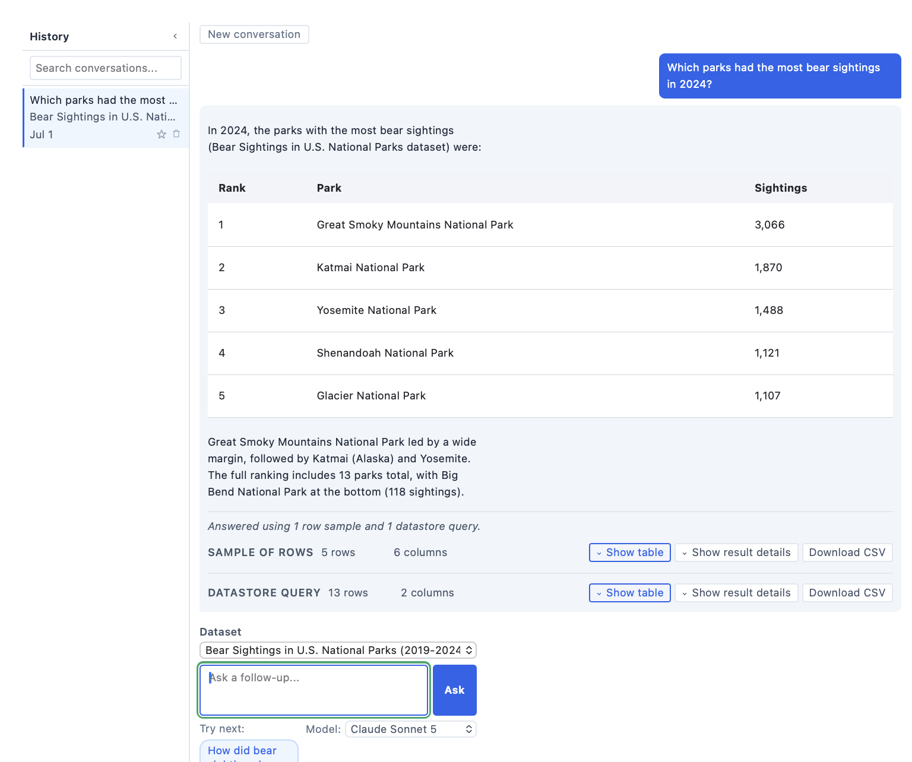

DKAN+AI: From Catalog to Conversation
AI agents on DKAN, connected with MCP (Model Context Protocol).
Dan Goodwin · Senior Engineer, Drupal + React · CivicActions
Modules:
dkan_ai_query
·
dkan_mcp_server
Dan Goodwin
Senior Engineer, Drupal + React
—

Apex, NC
- Drupal since D6; now focused on federal open data
- I write custom DKAN AI modules and the React frontends that consume them
- Exploring how AI can lower the barrier between open data and the people who need it
Off the clock: guitar, Aikido.

Open data is a simple promise
Governments and institutions publish what they know — and let anyone use it.
- In the U.S., it's often the law. Federal agencies have been required to publish data open by default since a 2013 executive order, codified permanently by the OPEN Government Data Act in 2019.
The infrastructure got good — fast APIs, reliable catalogs, (sometimes) careful metadata.
That's not the problem anymore.
The answer is in here somewhere
Somewhere in a 12-million-row CSV is the number a reporter, a researcher, or a neighbor came for.
Getting there takes real work:
- knowing which question to ask
- understanding what the numbers mean
- making sense of the answer

That gap is where most people stop.
"Published" ≠ "answered"
Everything after this slide is about closing the gap.
What DKAN is
- The Drupal distribution for open-data catalogs, in active use since 2013. Inspired by CKAN (another open-data catalog platform), built on Drupal.
- Maintained by CivicActions. Many public agencies run their data portals on it.
-
DKAN 4 shipped on Drupal.org in March 2026 —
composer require drupal/dkan, like any module.
Two halves: Metastore & Datastore
Metastore
The records describing the data. CRUD over metadata (DCAT, the standard open-data metadata format): titles, descriptions, distributions, schemas.
→ tells you what exists.
Datastore
The rows themselves, made queryable via the DatastoreQuery endpoint.
→ lets you compute on it.
The AI tools discover through the metastore and answer through the datastore.
The DatastoreQuery language — not raw SQL
{
"conditions": [
{ "property": "region", "value": "Southeast", "operator": "=" }
],
"properties": [
"park_name",
{ "expression": { "operator": "sum",
"operands": ["sightings"] }, "alias": "total" }
],
"groupings": [{ "property": "park_name" }],
"sorts": [{ "property": "total", "order": "desc" }]
}
A bounded query language: filters, sorts, pagination, and
aggregates (sum/count/avg/min/max + groupings).
The three jobs an end-user actually does
Discover the schema
"What's even in here?"
Form the query
"How do I ask for it?"
Pick the right visualization
"What does this look like?"
These are exactly the three things that stop people.
…map directly onto AI strengths
| The user's job | What AI is good at | |
|---|---|---|
| Discover the schema | ↔ | reading & structuring unfamiliar fields |
| Form the query | ↔ | translating intent into a formal query language |
| Pick the right visualization | ↔ | matching data shape to a chart |
The pairing isn't a gimmick — AI models are strong at exactly the interpretive layer people get stuck on. The deterministic catalog underneath keeps them honest.
Two ways to close the gap
A · End-user UX
A chat box on the site.
dkan_ai_query
for the visitor
B · Agent access
Expose the whole site to an AI agent.
dkan_mcp_server
for the developer / operator
Same goal, two audiences — though A quietly depends on B:
dkan_ai_query builds on a submodule that ships inside
dkan_mcp_server.
Meet the chat widget
"Ask in plain English — which parks had the most bear sightings? — and get an answer and a table, grounded in real queries. Ask for a chart and you'll get one, inline."
- A Drupal block; vanilla-JS library (no framework)
- Sanitized markdown · interactive tables + CSV · inline Vega-Lite charts
- A status pill shows the work ("Calling query_datastore…"), then the answer lands

Bear sightings, asked in English
Dataset: Bear Sightings in U.S. National Parks (2019–2024) · 96 rows
- Which parks had the most bear sightings in 2024?
- Show me the trend of bear sightings in Great Smoky Mountains
- Which region has the most sightings? …and the fewest?
- What's the average weight of the bears?
What just happened
-
A Drupal AI Agent (
ai_agents, max 10 loops) with ~16 function-call tools. - Mandated workflow: find resource → get schema (exact, case-sensitive columns) → sample / distinct values → query.
- It never guesses column names, and never does math in its head — every number routes through a tool.
The charts are model-authored
The AI writes the full chart definition via a
create_chart tool. The tool only returns a
placeholder — the real chart is captured on the server and drawn
with a charting library (Vega-Lite).
| Intent | Mark |
|---|---|
| comparison | bar |
| trend | line |
| distribution | histogram |
| proportion | arc |
| correlation | point |
Chart-type selection is the model's job — "matching data shape to a chart," slide 10 in practice.
From a chat box to an agent
Now hand the whole site to an agent.
- MCP — Model Context Protocol. A standard way for an AI client (Claude Code) to discover and call tools.
- Anthropic's open standard (Nov 2024); now under the Linux Foundation's Agentic AI Foundation.
- Tens of thousands of public MCP servers. This module makes DKAN one of them.
An agent explores the site like a new hire
Claude Code, connected over stdio (its terminal, not the network) ·
drush dkan-mcp-server:serve
- What's on this site?
- What do we know about bears?
- Break sightings down by bear weight
- How did this data get onto the site?
38 tools, in groups
25 read 13 write
One #[Tool] attribute plugin each. Tools are
thin — they forward to plain Drupal services.
| Group | # |
|---|---|
| metastore (catalog) | 9 |
| datastore (query) | 8 |
| harvest | 7 |
| write | 10 |
| status / search / resource | 4 |
3 of the "harvest" group's tools are also writes (register/run/deregister) — that's where the 13 comes from.
Same server, two connections
Read-only (anonymous)
tools/list → 25 tools
the 13 writes are invisible
Write role
tools/list → all 38
and delete_dataset works
Riding on mcp_server: the contrib module + the official MCP PHP SDK handle the protocol, transports, and JSON-RPC plumbing.
dkan_mcp_server: only adds the DKAN tools and the access gate. Any MCP-aware client works out of the box.
The thin-adapter pattern
Logic lives in services; MCP is just an adapter. So the same
dkan_query_tools layer backs both the
MCP tools and the dkan_ai_query agent.
How a tool call routes
- No agentic loop in the server. It only serves tools; the agent (Claude Code) drives the loop.
-
Rides contrib
mcp_server+ the MCP PHP SDK — it doesn't reimplement the protocol or transports. - Both stdio and HTTP supported; the access gate sits below both, so permissions hold locally and over the network.
Keeping token usage reasonable
- Row caps everywhere: ≤500 datastore, ≤100 metastore, ≤50 search
-
Truncated descriptions (200 chars);
spatialfields dropped - Compact output schemas — small predictable envelopes, not raw dumps
- Expensive catalog read is permanently cached
An unknown_column error carries
available_columns — the agent fixes itself in
one turn instead of round-tripping. Cheaper and faster.
The whole design assumes tokens cost money.
Where the AI actually lives
dkan_ai_query
The AI model lives here — via the Drupal AI module + AI Agents.
This module is an agent.
dkan_mcp_server
No AI model at all. A pure tool server.
This module serves an agent.
Keys live in the Drupal key module, never in code.
Cost & latency
3–30s per turn
- Each turn holds a server process the whole time it's thinking — no background job, no cancel button yet
More concurrent conversations needs more server capacity. Cheap models for the small jobs, and a mock mode for demos, keep costs down.
Grounding, refusals, sanity flags
- Every number traces to a tool result — not model memory
- Refusals are a typed enum, not free text (so they're scorable)
-
Results carry sanity flags like
zero_rowsandrow_cap_hit— and more - Deterministic checks beat prompt-pleading — a prompt fix alone couldn't stop a JSON-encoding bug; only a server-side validator did
This is how you make an answer defensible to a reporter or researcher.
eval-harness pass rate across five phases. Query-limit false confidence: 30% → 0%.
Two gates, composed
Who — permissions
Edit, delete, drop, and harvest are each their own Drupal permission grant. stdio defaults to anonymous = read-only; the same rule applies over HTTP via OAuth scopes.
What's on — tool groups
Toggle whole subsystems on/off. A disabled group is hidden and rejected. Destructive tools (delete, drop, full-replace update, merge-patch) are flagged honestly.
--user= stdio elevation
is "same trust level as drush uli" — never expose
beyond a trusted shell.
Open data is in its own transition
Like the developer learning to work with AI agents, open data is mid-transition too.
The question isn't whether these tools replace the platforms we've built.
It's whether we can help the data we've already published finally reach the people it's for.
Three things to take home
- The gap is interpretation, not infrastructure.
- The catalog keeps the AI honest; the AI makes the catalog reachable.
- Determinism where it counts, AI where it helps.
Questions?
Modules
dkan_ai_query
dkan_mcp_server
DKAN ·
drupal.org/project/dkan
·
getdkan.org
MCP ·
modelcontextprotocol.io
Dan Goodwin · CivicActions
 github.com/dcgoodwin2112
github.com/dcgoodwin2112
 drupal.org/u/dcgoodwin
drupal.org/u/dcgoodwin
 linkedin.com/in/dcgoodwin2112
linkedin.com/in/dcgoodwin2112
 whobroketheinternet.com
whobroketheinternet.com
Demo site is live — throw "can it do X?" questions at it.